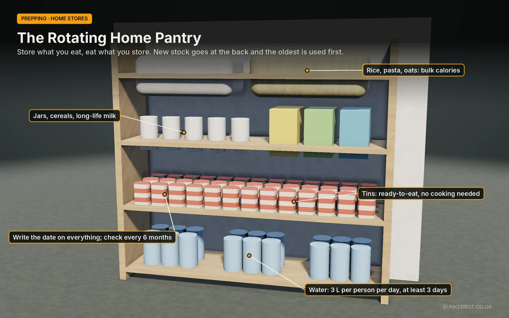
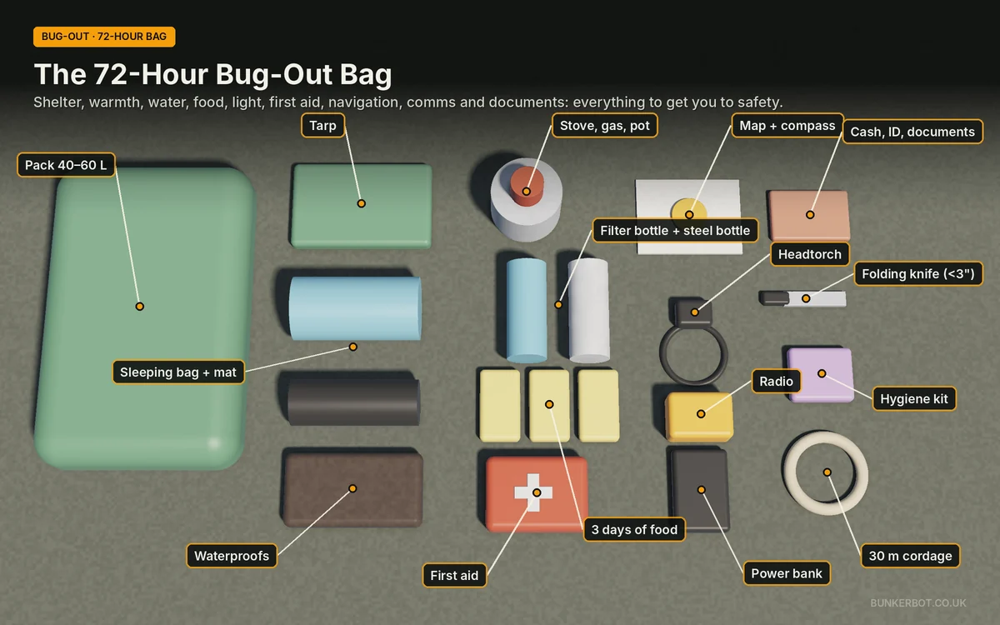
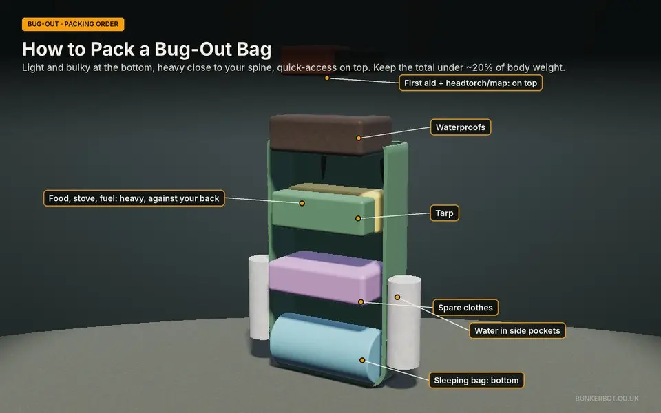

Bug-Out Bags & Home Prepping
Most emergencies are survived at home. The bag is for when home stops being safe.
UK Government "Be Ready" (Oct 2026): every household should have three days of supplies, including 3 litres of drinking water per person per day. Build it gradually as you shop, and check it every six months. Default to staying put: in most UK emergencies the advice is go in, stay in, tune in. Bug out only when staying is more dangerous: flood, fire, chemical release, or being told to evacuate. One bag per person, packed and by the door. A bag you have to assemble in an emergency won't get assembled.
1. The Layers of Preparedness
| Layer | Purpose | Lives |
|---|---|---|
| Home stores | Shelter in place for 3 days → 2 weeks → 3 months+ | Kitchen, pantry, garage |
| EDC | Handle the first hour anywhere | Pockets, keys, phone |
| Get-home bag | Get home from work/school if transport fails | Car, office, locker |
| Bug-out bag (BOB) | Leave home and survive 72 hours | By the door, one per person |
| INCH / retreat | Leave and not come back | Pre-positioned at a retreat; a bigger pack and vehicle |
2. Home Stores: Food

The rules
- Store what you already eat. It gets rotated and nothing is wasted.
- FIFO: first in, first out. New stock at the back; date everything with a marker.
- No-cook first: for the 3-day kit, choose food that's edible cold (tins, ready meals in pouches, crackers, nut butter, dried fruit).
- Calories matter: an adult needs ~2,000–2,500 kcal/day; a working adult in the cold, 3,000+.
- Cool, dark, dry, pest-proof: use food-safe lidded bins, and keep everything off the floor.
- Include: baby food and formula (ready-to-feed), special diets, pet food, and comfort food (morale matters).
Shelf-life guide
| Food | Typical shelf life (best-before) | Long-term option |
|---|---|---|
| Tinned meat, fish, beans, veg, soup | 2–5 years | Rotate yearly |
| Dried pasta | 2 years | 10+ years in sealed Mylar + oxygen absorbers |
| White rice | 2–3 years | 25+ years sealed |
| Oats | 1–2 years | 20+ years sealed |
| Dried lentils, beans | 2–3 years | 10+ years (older beans take longer to cook) |
| Long-life milk (UHT) / powdered milk | 6–12 months / 1–2 years | — |
| Peanut butter, nuts | 6–12 months | Freeze nuts |
| Honey, salt, sugar | Indefinite | — |
| Cooking oil | 12–18 months | Rotate; ghee and lard keep longer |
| Freeze-dried meals | 10–25 years | Expensive, light: ideal for bags |
| Military-style ration packs | 2–5 years | Self-heating options |
How much?
| Goal | Per adult (approx.) |
|---|---|
| 3 days (Be Ready) | 9 L water + ~7,000 kcal of no-cook food |
| 2 weeks | 56 L water (or a treatment plan) + ~30,000 kcal |
| 3 months | Water source + treatment, 90 kg of mixed dry goods & tins (rice, oats, pasta, beans, oil, sugar, tins, multivitamins) |
Cooking without power: camping stove + gas, used outdoors or in a well-ventilated space with a CO alarm, or a wood burner hob, a Kelly kettle, a haybox (thermal) cooker. See Fire Making & Staying Warm and Solar & Power.
For growing and preserving food long-term: Agriculture, Smallholding Livestock, Butchery & preserving.
3. Home Stores: Everything Else
The Be Ready core list, expanded:
- Water: 3 L/person/day × 3 days minimum (see Field Water)
- Food: non-perishable, no-cook, plus a tin opener
- Torch + spare batteries (or a wind-up torch), headtorches, lanterns. Not candles.
- Battery or wind-up radio for local/BBC emergency broadcasts
- Power bank(s), charged
- First aid kit + 2 weeks of prescription medicines, glasses, hearing-aid batteries
- Hygiene: wet wipes, hand sanitiser, bin bags, toilet roll, sanitary products, nappies
- Warmth: blankets/sleeping bags, hats, hot-water bottles
- Cash in small notes (card machines fail in power cuts)
- Printed emergency contacts, a household plan, and copies of documents (in a waterproof wallet)
- Pet supplies + water
- CO alarm + smoke alarms (lithium batteries), fire extinguisher, fire blanket
- Tools: duct tape, multi-tool, plastic sheeting, stopcock key, gloves
Label them and show everyone in the house.
4. Stay or Go?
| Stay (shelter in place) | Go (bug out) |
|---|---|
| Power cut, cyber attack, storms, snow | Told to evacuate by police/fire/council |
| Pandemic / quarantine | Flood water rising toward the house |
| Most civil disorder: stay in, stay quiet | Fire, gas leak, structural damage |
| Chemical or radiological release: go in, stay in, tune in (unless told otherwise) | The home can no longer be heated, supplied or defended |
Pre-decide your triggers as a family, so nobody argues in the moment. Use the site's Stay or Go decision tool.
5. Every-Day Carry (EDC)
- Phone + small power bank + cable
- Keychain torch
- UK-legal folding pocketknife or multi-tool (see §9)
- Lighter
- Cash (£50 in small notes) + an ICE (in case of emergency) card
- Mini first-aid kit: plasters, painkillers, personal meds, gloves, tourniquet if trained
- Water bottle; hat or buff seasonally
6. Get-Home Bag
For commuters: assume trains stop, phones are down, and you have to walk 20–50 km home.
- Comfortable walking shoes + spare socks (number one item for office workers)
- Waterproof jacket, warm layer, hat, gloves
- 1 L water + filter bottle, 2,000 kcal of snack food
- Paper map of the route home, compass, headtorch
- Power bank, cash, small first-aid kit, foil blanket
- Hi-vis vest (walking roads at night) and a dark layer (for staying unseen)
7. The 72-Hour Bug-Out Bag

Target weight: 10–15 kg; under ~20% of body weight.
| System | Kit |
|---|---|
| Pack | 40–60 L, a hip belt that fits, a rain cover or liner; plain colours (grey man) |
| Shelter | Tarp 3 × 3 m + cord + pegs, or a lightweight tent; emergency bivvy |
| Sleep | Sleeping bag (3-season), closed-cell or air mat |
| Clothing | Waterproofs, insulated jacket, base layer, 2 pairs of wool socks, hat, gloves; no cotton |
| Water | 2 L carried + filter bottle + chlorine dioxide tabs + metal bottle (to boil) |
| Food | 3 days, ~2,500 kcal/day: freeze-dried meals, oats, nut butter, bars, chocolate |
| Cooking | Small gas stove + 230 g canister, pot, spork, lighter |
| Fire | Lighter, storm matches, ferro rod, tinder (Fire) |
| Light | Headtorch + spare batteries (AA standard) |
| First aid | Trauma basics (dressing, tourniquet if trained), blister kit, meds, painkillers, rehydration salts |
| Navigation | OS map(s) of your area & routes, compass (and the skill), notes of rally points |
| Comms | Wind-up/solar radio, phone + power bank, whistle, written contact list, PMR446 radios for family |
| Tools | UK-legal knife, multi-tool, 30 m paracord, duct tape, sewing kit, gloves |
| Hygiene | Wipes, sanitiser, toothbrush, trowel and toilet paper, sanitary items, bin bags |
| Documents & cash | Copies of ID, insurance, prescriptions, family photos (for reuniting), £100+ in small notes, a USB stick with scans (encrypted) |
| Personal | Glasses, medication for 7+ days, child comforts, pet food and lead |
8. How to Pack It

- Bottom: sleeping bag in a dry bag (you won't need it until night).
- Middle, against your back: heavy items: food, stove, fuel, water reserves.
- Middle, outer: tarp/shelter, spare clothes.
- Top: waterproofs and an insulated jacket (you'll grab them first).
- Lid & hip-belt pockets: first aid, headtorch, map, compass, snacks, phone.
- Side pockets: water bottles, filter.
- Waterproof everything: a pack liner or rubble sack inside the bag. Never trust the rain cover alone.
- Walk 10 km with it before you trust it. Adjust, cut weight, repeat.
9. UK Knife Law
- It's an offence to carry any bladed or sharply pointed article in public without good reason, except a folding pocketknife with a cutting edge of 3 inches (7.62 cm) or less.
- Lock-knives don't count as "folding pocketknives" (case law), so they need a good reason, as do fixed blades.
- Good reason includes use at work, religious reasons and national costume, and can include genuine outdoor activity (e.g. carrying a bushcraft knife to and from a bushcraft course or permitted camping). It's judged on the facts.
- Self-defence is never a good reason. Some knives (flick knives, gravity knives, zombie knives and others) are banned outright, even at home.
- Practical approach: EDC a non-locking folder ≤ 3"; keep the fixed-blade bushcraft knife packed away in your bug-out bag, and carry it only when you're going to use it lawfully.
10. The Evacuation Plan
- Meeting points: 1. outside the house; 2. a nearby landmark; 3. outside town (a friend's/family home). Everyone memorises them.
- Routes: 3 routes to each destination, at least one on foot. Drive them and walk part of them. Mark them on paper maps in every bag.
- PACE comms plan: Primary (mobile calls), Alternate (SMS/messaging, which gets through when calls don't), Contingency (an out-of-area relative everyone checks in with), Emergency (notes left at home or the meeting point, PMR radios).
- Grab list: a printed checklist by the door: bags, meds, pets, phone chargers, documents, keys. Go in 10 minutes.
- Children & school: know the school's emergency plan; agree who collects whom.
- Vulnerable people: register with your energy and water companies' Priority Services Registers, and plan transport for anyone who can't walk far.
- Practise twice a year, when the clocks change (also check stores, batteries and dates).
Staying informed when the network fails
- Write it down: the government's free household emergency plan template (prepare.campaign.gov.uk) puts contacts, meeting points, medication, insurance details and local radio frequencies on one printed page. Phones die and contact lists live in the cloud.
- Emergency Alerts: a siren-style message on every 4G/5G phone in the danger zone (floods, fire, extreme weather). There's no sign-up and no tracking. Read it, act on it, and check it at gov.uk/alerts if in doubt.
- A wind-up or battery FM radio is the Be Ready checklist's information lifeline. Local BBC radio carries evacuation, rest-centre and water-station news. See the Radio Freqs tool and your regional guide.
- Power cuts: call 105. Since landlines are moving to digital (copper switch-off by end of January 2027), a home phone stops working in a power cut unless it has a battery back-up. Providers must supply one to people who depend on their landline, so ask. Keep a charged mobile and a power bank.
- Phone settings now: keep location services on so 999 calls send your position automatically, and register for emergencySMS (text "register" to 999) in case you can't speak.
- Radios, Morse and rescue signals: see Signals & Radio: which walkie-talkies are legal, frequencies to write down, whistle and mirror signals, ground-to-air codes.
Pets & livestock
- Pets go with you. Rest centres often can't take animals, so arrange a pet-friendly fallback (friend, family, kennels) in advance.
- Pet grab kit: 3–7 days of food, water, bowls, lead/harness or carrier, medication, vaccination records, a recent photo (for lost-pet posters), and the microchip number. Keep your contact details on the chip up to date.
- Livestock can't usually be evacuated at short notice. Move them to high ground before a flood, open escape routes rather than locking them in, and tell the fire service what's on site. See Smallholding.
11. Vehicle Kit
- Keep the tank above half (and an EV above 50%)
- Blanket/sleeping bag per seat, water, snacks, torch, phone charger
- Shovel, ice scraper, de-icer, tow strap, jump leads/booster pack, tyre inflator
- First-aid kit, warning triangle, hi-vis, fire extinguisher
- Paper road atlas; get-home bag in the boot
- Winter: grit or cat litter for traction, snow socks, boots
12. INCH: I'm Never Coming Home
For collapse-level events, where the plan is to reach a retreat (family land, a smallholding, a remote property) and stay. An INCH bag (25–30 kg) adds:
- Axe and saw, larger cooking kit, fishing kit (Fishing), small-game kit (Hunting & Trapping)
- Seeds (heritage, open-pollinated), sewing and repair kits, extra boots
- Long-term water treatment, a solar panel + power bank (Solar & Power)
- Printed manuals (this site, offline), and a trade goods reserve
- But: you can't carry a homestead. The real INCH plan is pre-positioned supplies at the retreat and the skills in your head.
13. Kit Tiers
Tier 0: Be Ready (£50–150 · everyone, this month)
- 3 days of water and no-cook food per person, tin opener
- Torch, radio, power bank, first-aid kit, cash, printed contacts
- Household plan written down; stopcock/meter/fuse board located
Tier 1: Prepared household (£300–800)
- 2 weeks of food + water (or treatment) per person, rotating
- EDC for each adult; a get-home bag in each car or workplace
- Camping stove + 2 weeks of gas; bucket-toilet kit
- One 72-hour bag per person (budget versions are fine to start)
Tier 2: Committed (£800–3,000)
- Quality bug-out bags (pack, sleep system, shelter, filter, stove) per person, walk-tested
- 3 months of food stores; water storage + harvesting
- PMR446 radios; printed maps; rally points; twice-yearly drills
- First-aid training (a 2-day outdoor first-aid course)
Tier 3: Serious (£3,000–10,000)
- 6–12 months of food (bulk sealed dry goods + rotation)
- Off-grid power and heating (Solar & Power, Fire & Warmth)
- Vehicle prepared as a mobile base; fuel stored within legal limits
- Skills: navigation, bushcraft, food production, first aid
Tier 4: Retreat (£10,000+)
- A retreat location with stored supplies, water source, heat and growing space
- INCH bags; caches along the route
- Community: trusted neighbours with complementary skills. The strongest prep of all.
Related Sections: Field Water → Fire Making & Staying Warm → Field Shelters → Solar & Power → Disaster Playbooks → Navigation → Psychology & Morale